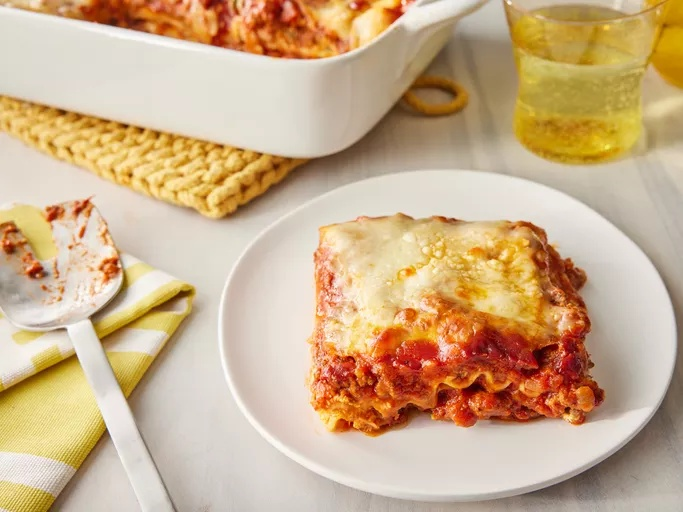

Back to Homepage
Lasagna Recipe

Description
Lasagna is a classic Italian dish made with layers of pasta, meat sauce, cheese, and béchamel sauce. It's a hearty and comforting meal perfect for family gatherings.
Ingredients
- 12 lasagna noodles
- 1 pound ground beef
- 2 cups marinara sauce
- 2 cups ricotta cheese
- 2 cups shredded mozzarella cheese
- 1 cup grated Parmesan cheese
- 1 egg
- 2 tablespoons chopped fresh basil
- Salt and pepper to taste
- Olive oil for cooking
Instructions
- Preheat the oven to 375°F (190°C).
- Cook the lasagna noodles according to package instructions. Drain and set aside.
- In a skillet, heat olive oil over medium heat. Add ground beef and cook until browned. Drain excess fat.
- Add marinara sauce to the skillet with the beef. Simmer for 10 minutes.
- In a bowl, mix ricotta cheese, egg, basil, salt, and pepper until well combined.
- Spread a layer of meat sauce on the bottom of a baking dish. Place 3 lasagna noodles on top.
- Spread half of the ricotta mixture over the noodles, followed by a layer of mozzarella cheese.
- Repeat layers: meat sauce, noodles, ricotta mixture, mozzarella cheese.
- Finish with a final layer of noodles topped with remaining meat sauce and mozzarella cheese. Sprinkle Parmesan cheese on top.
- Bake in the preheated oven for 30-35 minutes or until cheese is bubbly and golden brown.
- Let it cool for a few minutes before serving. Enjoy your homemade lasagna!